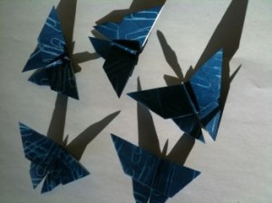
Time: 30-45 minutes
What you need:
-Scrap paper
-Origami pattern
-X-acto knife, or objects to print
– Pen or fine tip sharpie
-Sunprint paper
-Cardboard
-Acrylic
-Tub of water
There is a lot of room for experimentation in this project. To start, I made my own origami papers with different patterns of paperclips, and made butterflies. Since I’m pretty new to sunprinting, this let me get comfortable with materials themselves. After that I felt a little more adventurous, and tried out a few methods of cutting paper into shapes to correspond to the specific origami pattern. This worked really well for folds like the turtle and chicken, but was definitely a lot harder! It took some trial and error to find the best way to cut the paper, but having that much control over the sunprint gives beautiful results. Either way, all you need is your favorite origami pattern and your imagination, and the possibilities are endless.
Butterflies:
To make butterflies, I did a series of paperclip sunprints, and experimented with putting them at different angles and patterns. The effect was much like normal origami paper, with a pattern on one side, and white on the other. I used the 4×4 paper, since it was already square.
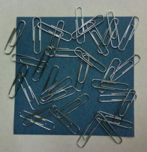
After making a few different versions of the paperclip pattern, I let them all dry, flatten, and develop overnight underneath heavy books.
The pattern I used: http://www.origami-club.com/en/bug/butterfly2/butterfly2/index.htm
Fan:
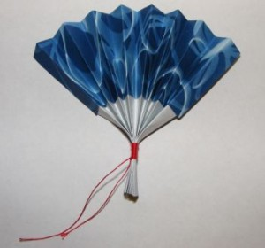
For the fan, I used the same technique as the butterflies, and made origami paper with a pattern of rubber bands of various sizes. The 8×12 paper, trimmed down to 8×8, ended up working much better than the 4×4 for this fold.
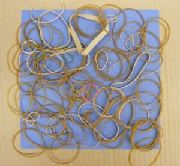
After printing the rubber bands, I was surprised at the pattern made by the different heights of the rubber bands. This is definitely something I’d like to play with more. Here’s a piece of the final fan paper:
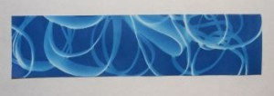
The pattern: http://mail.google.com/mail/?ui=2&ik=5ba7603ffd&view=att&th=123f329048f66779&attid=0.1.0.3&disp=inline&zw
Plesiosaur:
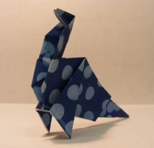
There are plenty of fun origami patterns out there too! To mix it up a little, I tried a Plesiosaur, and patterned the 4×4 paper with left over holes from a hole-puncher.
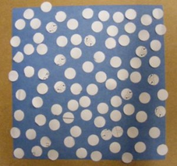
The pattern: http://www.origami-club.com/en/others/plesiosaurus/plesiosaurus/index.htm
http://www.twoguysfossils.com/images/model_plesiosaur.jpg
Turtle:
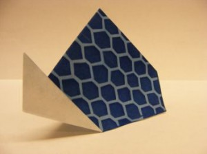
Here’s where things got a little more complicated, and exciting. For the turtle, I wanted to create a pattern that was only on the shell, leaving the other pieces of the paper blank. I folded the shape out of 4×4 scrap paper first, (using this pattern:
http://www.origami-club.com/en/kids/turtle/turtle/index.htm)
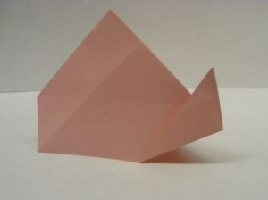
Then I drew lines on the folds, so I could tell which part of the paper made up the shell,
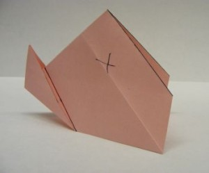
And unfolded the turtle.
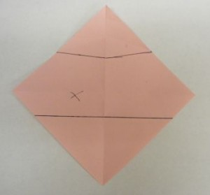
I wanted to make a pattern of hexagons on my turtle’s shell, so I used a ruler to grid off half-inch squares.
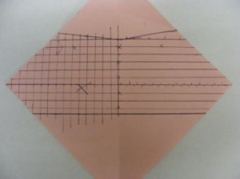
Then I drew diagonals running corner to corner across the squares, forming the basis for the hexagons.
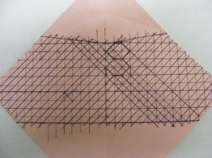
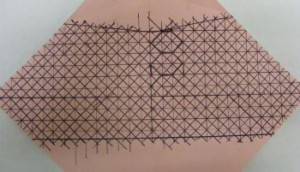
I used sharpie to mark off the lines of the hexagons, so they’d be easier to see,
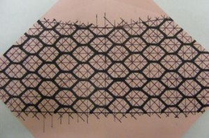
and trimmed out the insides with an x-acto knife, leaving a webbing of hexagons.
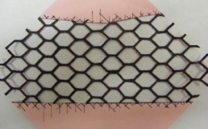
This what I used for the sunprint, and put the acrylic on top of both the patterned scrap paper and the sunprint paper to hold it all in place.
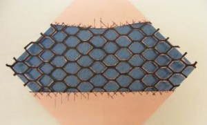
Then I printed it,developed, dried, pressed, and refolded!
Chicken:
I did the first chicken before I did the turtle, and after doing the turtle, which leaves a large amount of the scrap paper attached for the printing, I decided to try another chicken. The first one proved to be much harder, because the separated pieces were small and easy to lose, and also had a tendency to shift around when I put the acrylic on to make the print. However, it’s something I’d like to work with more, because it allowed larger parts of the sunprint paper to be the characteristic blue than white.
I started both chickens by folding a sample on scrap 4×4 paper (pattern: http://www.origami-club.com/en/animal/chicken2/chinken2/index.htm).
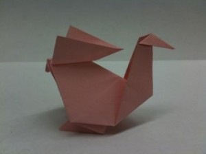
Then I marked out the patterned areas,
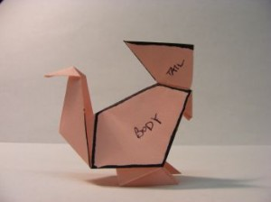
Unfolded,
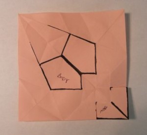
Drew out the patterns,
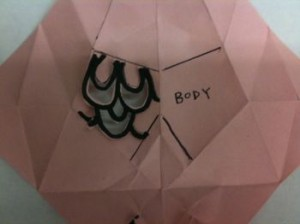
Folded the paper in half, and cut them out symmetrically.
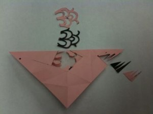
I took the cut out shapes, and laid them out on the sunprint paper. To make sure they ended up in the right place, I folded the paper on a diagonal, the same as the first fold in the pattern, and used it as a center line to place them on. This is where this model became a little impractical, because the shapes did not want to stay put…
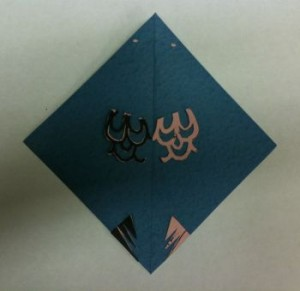
Once it was developed, dried and flattened under books:
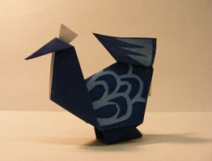
For the second chicken, I used the same basic pattern of folding a sample, tracing out the areas I wanted to sunprint, unfolding, and cutting out. Instead of just keeping the trimmed-out shapes, I cut the shapes from the larger paper and kept the paper.
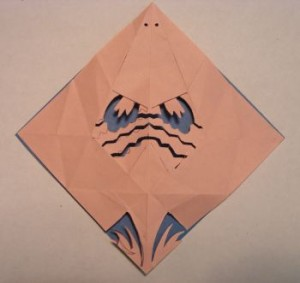
So the finished paper looked like this, with more white from the shaded portions.
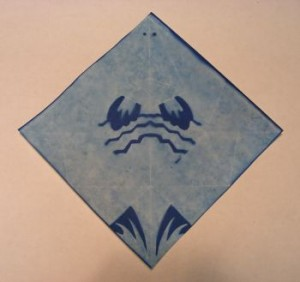
And the finished piece:
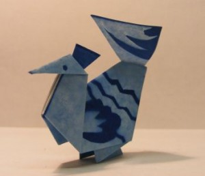
Tags: Craft project